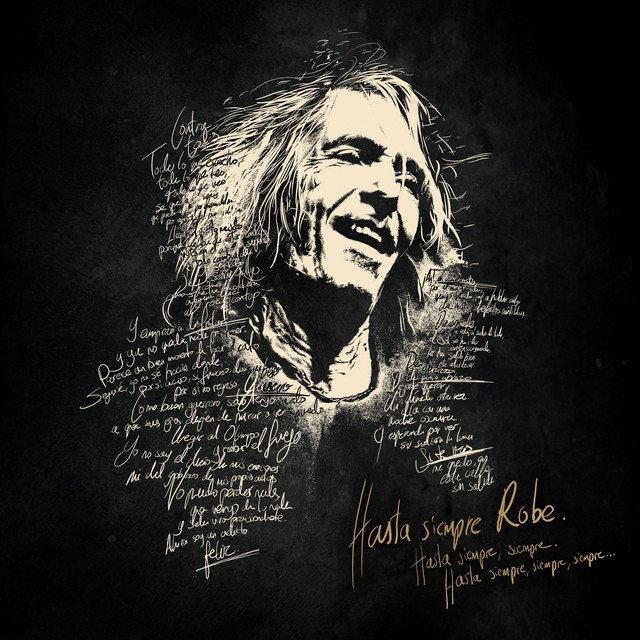
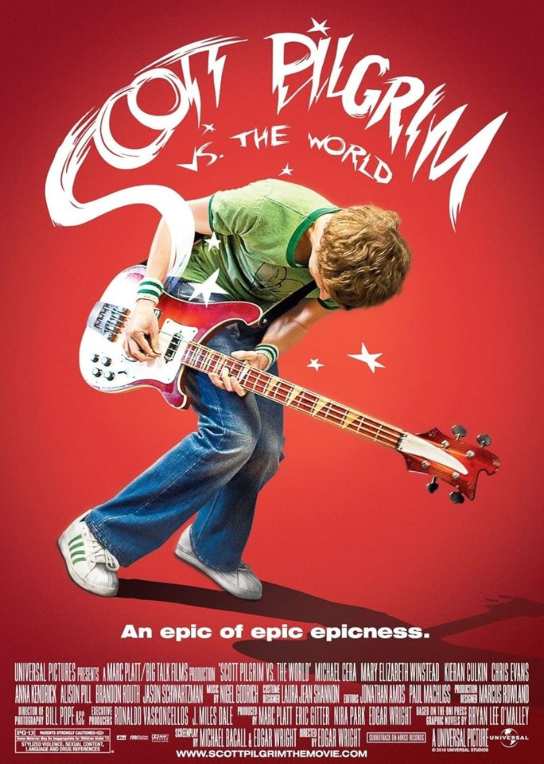

Robe
An artist I come back to when I want to listen quietly and pay attention to the lyrics.
Listen to: Del Tiempo Perdido
An artist I come back to when I want to listen quietly and pay attention to the lyrics.
Listen to: Del Tiempo Perdido
Gavina.mp3 also has a place among my musical tastes and in the music that accompanies my everyday life.
Listen to: SOTA EL CEL
Another name I enjoy listening to and sharing when we talk about music recommendations.
Listen to: Marcelo Criminal
The visual style appeals to me. It brings the energy of comics to animation.
Watch trailer: Spider-Man: Into the Spider-Verse
This film combines the humour, music and video game references I enjoy, with a distinctive visual style.
Watch trailer: Scott Pilgrim vs. the World
I enjoy getting carried away by its adventures and the chance of finding something different on every journey.

A comedy I turn to when I want to unwind, laugh and spend some time with its characters.

I like its sensitivity and the way it tells an adventure that encourages a connection with its characters.

I enjoy its imagination, extravagant situations and distinctive, instantly recognisable style.